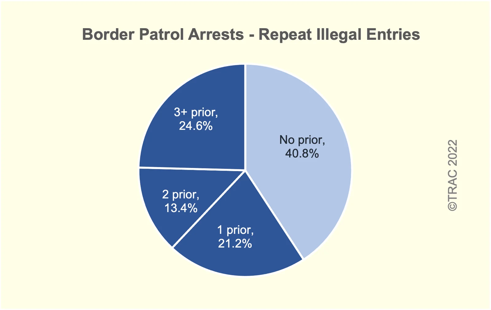

Q3. Repeat removals, repeat crossings and re-entry

Border Patrol arrests by number of prior illegal entries. TRAC (Transactional Records Access Clearinghouse), Syracuse University | Date: c. 2022 (FOIA data). Share of Border Patrol arrests with 0, 1, 2, 3+ prior entries. Repeat crossers counted from Border Patrol records Source: https://tracreports.org/reports/694/https://tracreports.org/reports/694/include/figure1.png